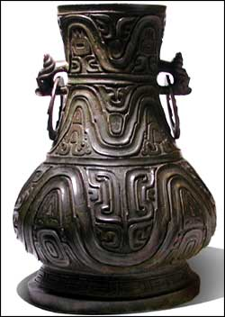

Houma
The remains of a large foundry complex have been found here. Moulds and pattern blocks showed that there was a complex manufacturing process in operation, involving many people of different skills and talents.

Eastern Zhou bronze wine vessel |